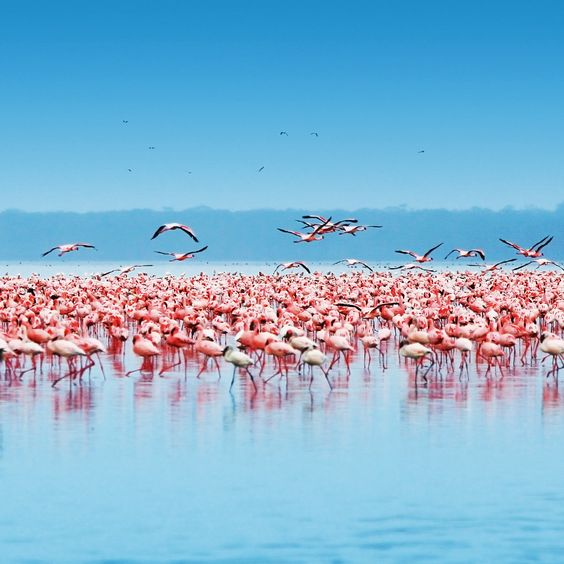

Our website is aimed at providing an interface for Kenyan Tourist to access various destinations and accomodation sites. They can make their bookings in time.Transparency is key between the tourist center and the tourists.
EXPEDITION OF UNEXPLORED TERRITORY
The Great Wildebeest Migration in the plains of East Africa is one of the world’s most thrilling, intriguing and spectacular displays of wildlife behavior. As such, our travelers place great timing importance on having the best front row seats to see the event
The migration occurs within an area that is known as the “Serengeti ecosystem.” The 40,000-square mile area is defined by Masai Mara National Reserve in the north and, in the south, Ndutu, Ngorongoro Conservation Area and Maswa Game Reserve in Tanzania. The central, eastern and western areas include Grumeti Reserve, Loliondo, the official Serengeti National Park including part of southern expanse of Kusini and other protected areas
The migration is not a singular, isolated event. Instead, the phrase describes the constant movement of over 1.5 million wildebeests and hundreds of thousands of zebras, as well as elands and gazelles. As with other wildlife, the purpose of the movement is the search for pasture and water. When supplies of these vital resources are depleted in one area, the animals move to another area where water, grasses and other food sources are plentiful.
Mount Kenya (Kirinyaga) is the second highest mountain in Africa. Like Mount Kilimanjaro, it is an extinct volcano. It dominates the Central Kenyan highlands, towering just seventy miles north of Nairobi, and ten miles south of the Equator. The mountain was once much higher, but today it is a large dome, roughly 60 miles in diameter, from which rises the steep, eroded remains of its volcanic core. Mount Kenya (Kirinyaga) has twin summits: a pair of rocky snow-capped peaks, Batian (17,057 feet./5199 metres) and Nelion (17,021 feet./5188 metres), separated by a narrow gap and surrounded by an intricate system of peaks and ridges, with many high glaciers. More technically difficult than Kilimanjaro, Mount Kenya (Kirinyaga) offers some of Africa's finest rock and ice climbing. Huts are available along the most common routes, but the more serious routes may require bivouacs. The mountain is heavily forested, and its ecological diversity is one of its primary attractions. A variety of plant life grows on the slopes of Mount Kenya (Kirinyaga), including camphor, cedar, and bamboo. Elephant, rhino, buffalo and leopard roam the surrounding areas.
Flamingos boom occurs in the rainy season, between November and May, when food in the lake is aplenty. However, in drier months, especially during droughts, pink flocks move north of Lake Nakuru to another famous flamingos' feeding ground in Kenya—Lake Bogoria where these birds are actually observed year-round.
Although gorgeous lesser flamingos are the main attraction of Lake Nakuru, be sure to see a range of other birds species, especially white pelicans, as well as other wildlife around Lake Nakuru National Park.